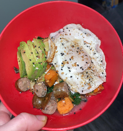
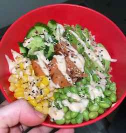
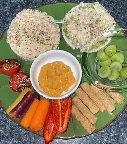
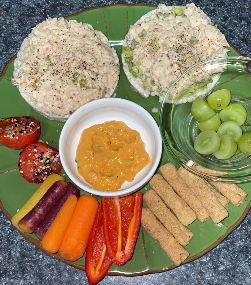
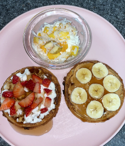
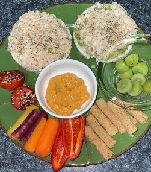
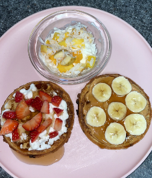

Anna DiMase
Current UCR Undergraduate Student Studying Business Administration with a concentration in Marketing, and Professional
certification studies in nutrition. End goal includes developing and running a company that thrives to help the nutritional
and dietary needs for individuals who live with IBS, Crones disease, Gluten Sensitivity, and other dietary restrictions. Focuses on LowFodMap meal plans, elimination
of inflamatory ingredients, and helps educate and guide those who have dietary obstacles through recipes, meal plans, product description
and education about the science and ingredients of different foods.
As an individual, I personally got diagnosed with IBS over a few months ago. I follow strict LowFodMap diets and have done a lot
of research on how and what foods affect my body. Before I was diagnosed, I would only stick to my "safe foods" like eggs and
oatmeal because I knew they would not cause me discomfort. As someone who grew up in the kitchen and loves to cook, I couldn't enjoy
my hobby anymore. After numerous appointments, process of elimination, and lots of emotional stress, the root of the problem
was finally discovered. I was put on the "LowFodMap diet" which is strict, and took a while to adjust to, but now I feel better
than ever and am back to cooking the meals I love with minor adjustments due to researching brands and foods that are safe to eat for me.
My goal is to help guide people who also didn't know where to start at first after diagnosis. I want to share my recipes, inspire people and show that we can still enjoy food and eat what we want, as long as we're educated on the substitutions that are safe for us, we can still enjoy all of our favorites! :)
Experience
Sales Associate
• Customer Service Interactions and Experience
• Returns and Restock
• Experience with online orders and sales
Cook/Recipe Content Creator
• Creating recipes and content following the LowFodMap Diet
• Provides instructions, pictures, and nutritional information
Barista
• Provides Starbucks Customer Connections to enhance experience
• Drive thru experience
• Drink and Food Handling
• Sales and customer service
Education
UC Riverside
University of California Riverside
Portfolio


 



